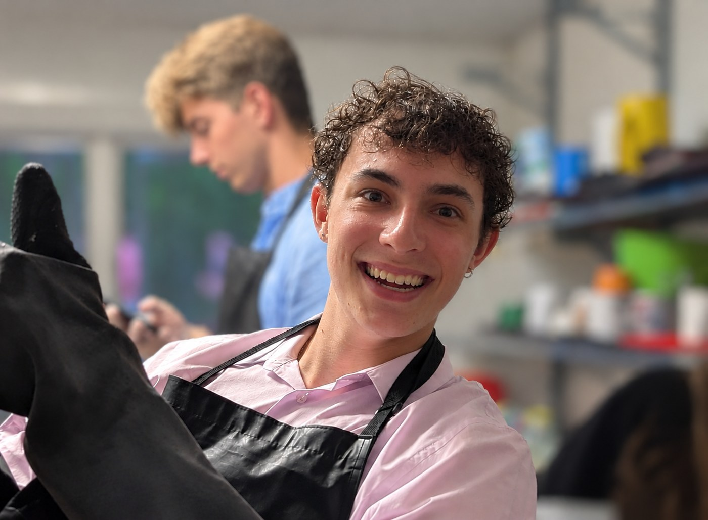
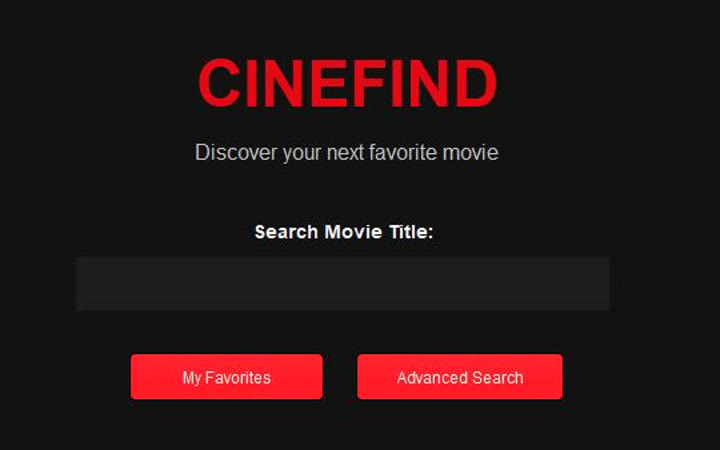

A computer vision pipeline that follows around 90 Daphnia at once and turns their movement into the data researchers use to compare treatments.
Garry Sverlov
Garry Sverlov
Welcome!
Hi, I'm Garry!
I'm a computer science student at the University of Toronto, interested in AI agents, systems programming and machine learning. When I need something that doesn't exist yet, I usually just build it.
I've worked on real-time operating systems at IntervalZero, built a computer vision pipeline for a biotech startup, and I spend a lot of my free time building tools out of AI agents.

Work History
- May - Aug 2026: Software Engineering Intern, Real-Time Operating Systems @ IntervalZero
- Jul - Aug 2025: QA Intern @ IntervalZero
- Apr - Jun 2025: Computer Vision Intern @ Daphis Therapeutics
Education
- 2024 - 2028: B.Sc. in Computer Science (Specialist), University of Toronto
Relevant coursework: Data Structures & Algorithms, Operating Systems, Machine Learning, Software Engineering Principles, Systems Programming in C, Databases (SQL)
Projects
Turns a prompt into a working app with up to 6 Claude Code agents building in parallel. I fixed how it splits and merges their work.
Matches students to scholarships and drafts the essay. Honorable Mention, Anthropic x UofT Hackathon.
Underlines false and misleading claims in the article you're reading, with Claude's reason on hover.
Pick your cards, seat and the action before you, and it recommends a play, updating as you click.

Screenshots CineFindI could never pick a movie, so I built an app that recommends one from the mood you're in. Team project for CSC207.
Bio
I'm in my third year of Computer Science at the University of Toronto.
I spent summer 2025 on the QA team at IntervalZero, which makes real-time operating systems for industrial automation and medical devices, and came back in summer 2026 as a software engineering intern. Across those two summers I:
- Traced a customer-reported bug, where upgrading wRTOS left the network adapter broken until a reboot, to the old driver staying loaded in the kernel, then shipped a C++ installer fix that unloads it.
- Rebuilt and automated the C++ API test suite, cutting nightly failures from 400+ to about 175.
- Wrote a Bash harness that ran 280 VM startup and shutdown sequences, and traced all 28 reproducible failures to a single shared-memory cleanup bug.
- Turned a 30-minute manual VM setup into a zero-touch nightly Jenkins build.
Previously, I:
- Was the only developer on the computer vision pipeline at Daphis Therapeutics, a longevity research startup, tracking Daphnia across video. The movement data it produced went into the company's investor pitch, which reached the Y Combinator interview round.
- Won an Honorable Mention at the Anthropic x UofT Hackathon with ScholarshipAI.
Outside of code I play poker and chess (about 1650 rapid, and I can play blindfolded), and I train Brazilian jiu-jitsu. I got into computers as a kid by building my own PC so I could play Fortnite.
Misc.
LinkedIn
GitHub
Resume
Email: garrik.sv@gmail.com